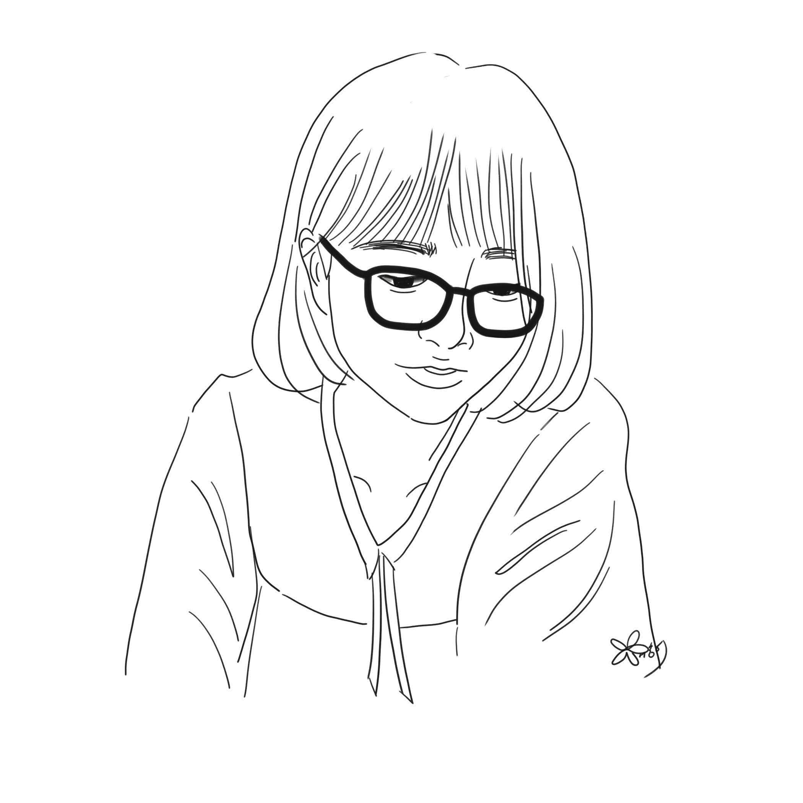

2021.08 — Present
예스24 커뮤니티파트
프리랜서 · 재택
서평단 관리, 리뷰 모니터링 등 서비스 운영 지원
About me

이야기를 쓰고 다듬습니다. 텍스트 기반의 콘텐츠를 기획하고 취재하며 작성하기도 합니다.
엑셀 VBA, Perplexity AI 챗봇을 비롯한 디지털 도구를 활용하여 논리를 더합니다.
Education & Certificates
공인된 학력과 자격증
Education
소설 전공 · 석사 졸업
Certificates
대한상공회의소
대한상공회의소
Professional experience
텍스트로 수렴되는 다양한 실무 경험
2021.08 — Present
프리랜서 · 재택
서평단 관리, 리뷰 모니터링 등 서비스 운영 지원
2025.04 — 2025.12
프리랜서
뉴스레터 기획 · 편집, 기자단 관리 등
2010.02 — 2015.06
기획 총괄
쇼핑몰 및 오픈마켓 기획 전반
2006.01 — 2010.01
편집
단행본 편집
Writing, editing & publishing
NOVEL · 2019
SF 스릴러 소설 · 고즈넉이엔티 출간
CHILDREN'S BOOK · 2016
고양이 동화책 출간 · 언리미티드 에디션, 홍대상상마당전 참여
EDITING · 2021—2022
≪내 기분은 내가 결정합니다≫, ≪소울 아프리카≫, ≪나는 행복을 그립니다≫ 교정 · 교열
DIGITAL STORY · 2020
채팅 소설 작업 · 50부작 호러 채팅 소설
Awards & Outputs
수상과 선정, 참여 이력
서울예술인지원센터 아카데미 ‘MEET-UP’ 스토리 워크숍 참여
원미닛고 숏폼 원고 제공
라우드소싱 네이밍 공모 채택
시민과 함께하는 SBA 글판 공모전 우수상 수상
제36회 용산도서관 창작시공모전 일반부 최우수상 수상
데뷔작가 양성프로그램 선정 — 문화체육관광부 주최 · 한국콘텐츠진흥원 주관
들려주는 연극 〈벽오금학도〉 연극 대본 각색
부산지역 문화잡지 voila 객원 필진
Connect
글쓰기, 콘텐츠 제작, 편집에 관한 협업 제안을 기다립니다.